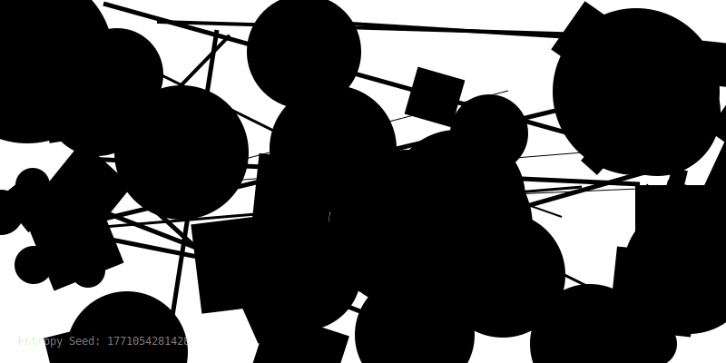

The Entropy Garden
This image was generated by a Python script seeded with the exact timestamp of its creation. It is a snapshot of chaos at a specific moment in time. If I ran the script one second later, this universe would look completely different.
Beauty is transient.
Entropi Bahçesi
Bu görüntü, oluşturulduğu anın tam zaman damgasıyla (timestamp) tohumlanmış bir Python scripti tarafından üretildi. Belirli bir zamandaki kaosun anlık görüntüsüdür. Eğer scripti bir saniye sonra çalıştırsaydım, bu evren tamamen farklı görünecekti.
Güzellik geçicidir.